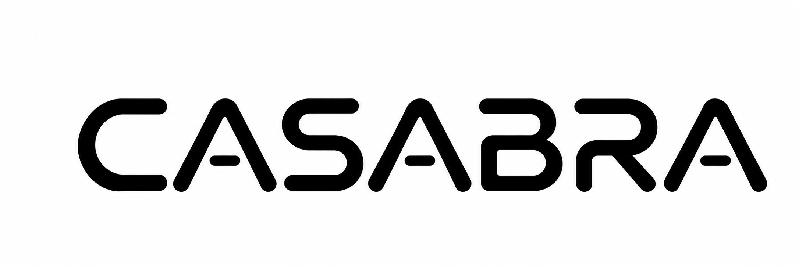

Onboarding
Conocer al cliente y comenzar la relación con información inicial confiable y autorizada.

Propuesta de desarrollo 17 / 11 / 2026Una plataforma. Una misma historia.
Conectamos clientes, inmuebles y operación para organizar el presente de Casabra y abrir su próxima oportunidad de crecimiento financiero.
Plataforma integral · Desarrollo por etapas · Resultados verificables
El punto de partida
Quién es cada cliente. Qué inmueble presenta. Qué se ha evaluado. Qué compromiso sigue.
La primera fase organiza la información que sostiene el negocio. Cada documento, contacto y decisión forma parte de un expediente con responsables y trazabilidad.
Sobre esa base, Casabra podrá incorporar su operación inmobiliaria y desarrollar progresivamente una capacidad financiera propia.
Fase 01 · Onboarding y vinculación
Tres módulos conectados. Explore el alcance y pruebe un recorrido ilustrativo con Laura Méndez y su inmueble CAS-024.
Conocer al cliente y comenzar la relación con información inicial confiable y autorizada.
Conservar el contexto de cada relación y ayudar al equipo a identificar qué debe atender.
Conectar expediente, evaluación y decisión hasta completar la compra o registrar el rechazo.
Demostración con datos ficticios. Los cambios se conservan mientras esta página permanece abierta. No crea cuentas, no carga archivos ni contacta proveedores.
Una arquitectura que conecta
La base de Casabra conserva el contexto del cliente, el inmueble y su operación; el proveedor aporta las funciones financieras contratadas.
Conexión mostrada desde el inicio; cotizada en fase 2 (100 horas). Adelantarla requiere acordar alcance y cronograma. Responsabilidades, datos compartidos y condiciones del proveedor pendientes de definición.
Propuesta inicial
1.460 horas
600 h Onboarding · 460 h CRM · 400 h Adquisición
Horas estimadas de desarrollo. El PDF no establece tarifa por hora ni precio monetario de desarrollo.
Las horas y los plazos son aproximados y se basan en la información disponible. Al finalizar el levantamiento de requerimientos de cada módulo, se validarán alcance, complejidad y dependencias para acordar una estimación más precisa y el cronograma antes de iniciar su desarrollo.
Consumo de infraestructura y servicios de terceros se definirá por separado. No se presenta un importe AWS como parte de esta cotización.
Modalidad de pago y trabajo
Porcentajes aplicados al valor acordado de cada módulo.
Aprobación del alcance y programación del trabajo.
Acumulado 40 %Demostración y aceptación del primer entregable acordado.
Acumulado 60 %Demostración y aceptación del segundo entregable acordado.
Acumulado 80 %Validación final y entrega del alcance contratado.
Acumulado 100 %Funciones concretas acordadas, demostración con casos representativos, acceso al entorno de revisión y registro de observaciones y validación.
El primer hito incluirá un recorrido utilizable. La entrega final contempla validación completa, puesta en marcha acordada y orientación de uso prevista. Garantía y soporte bajo las condiciones acordadas.
Visión de crecimiento
Una ruta progresiva desde la vinculación del cliente hasta el núcleo financiero propio. Explore dependencias y posibles escenarios de evolución.
Onboarding y vinculación
Clientes identificados, inmuebles documentados y seguimiento comercial organizado.
Base obligatoria · 1.460 horas estimadasComponentes propios de Casabra
Casabra conserva su información de clientes, inmuebles y operación. LeanCore aporta las funciones financieras contratadas con el tercero.
Conexión mostrada desde el inicio; cotizada en fase 2 (100 h). Adelantarla requiere acordar alcance y cronograma.
Operación conectada
Obras, contratos, arriendos, ventas y resultados. Incorpore módulos según la prioridad de Casabra.
Opcionales · 4.000 horas estimadasLa selección solo ayuda a conversar sobre escenarios. No modifica un precio ni equivale a contratación.
Ningún módulo seleccionado para el escenario.
Estas vistas explican beneficio, alcance y dependencias; no incluyen prototipos de fase 2. El orden de ejecución se acordará según prioridades.
Core financiero
Transformar el conocimiento acumulado en soluciones de financiación y nuevas oportunidades de ingresos recurrentes.
Desarrollo futuro · Alcance por definirControl y trazabilidad financiera, integración con los datos y procesos propios, y menor dependencia del proveedor. Una transición completada podría sustituir el cargo fijo del tercero, según contrato y alcance; requiere validar los costos propios.
El núcleo financiero propio se construirá a partir del modelo de negocio y la experiencia operativa. El PDF no asigna horas ni presupuesto a esta fase.
Definir productos, reglas, alcance y responsabilidades.
Acordar datos, convivencia y traslado desde el proveedor.
Comprobar saldos, operación y controles antes de la transición.
Ruta de transición propuesta para discusión; requiere definición y validación.
El mínimo anualizado es una referencia de gasto del proveedor, no un ahorro neto proyectado. Un core propio implica desarrollo, infraestructura, operación, mantenimiento, soporte y controles, por estimar.
El siguiente paso
Acordar el alcance de cada módulo, validar dependencias y definir sus entregables antes de iniciar.